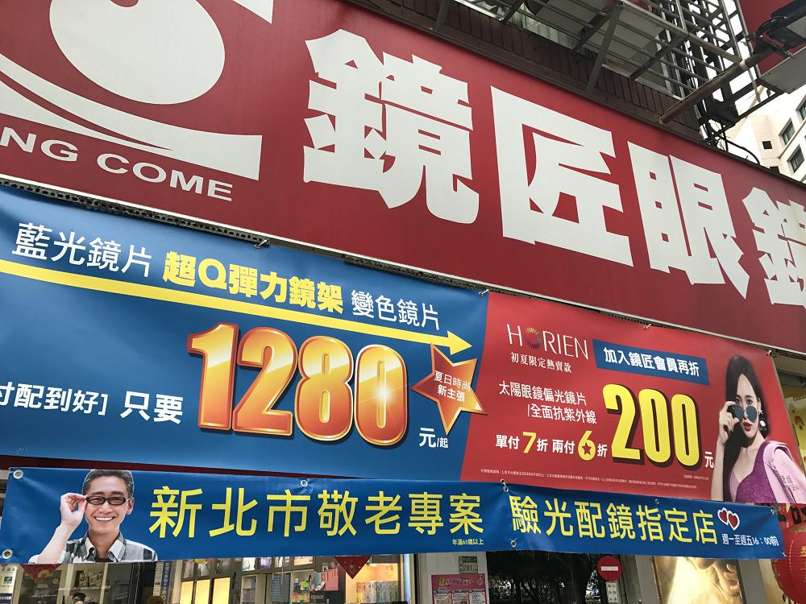
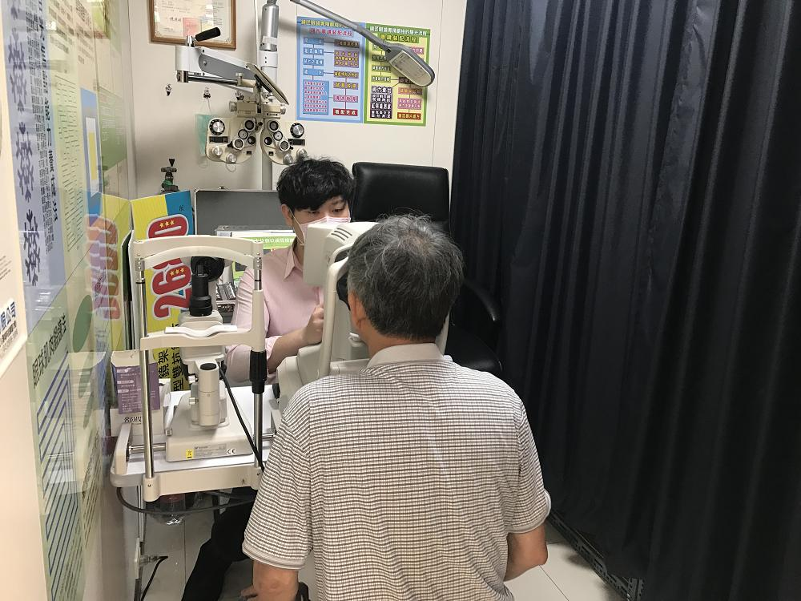
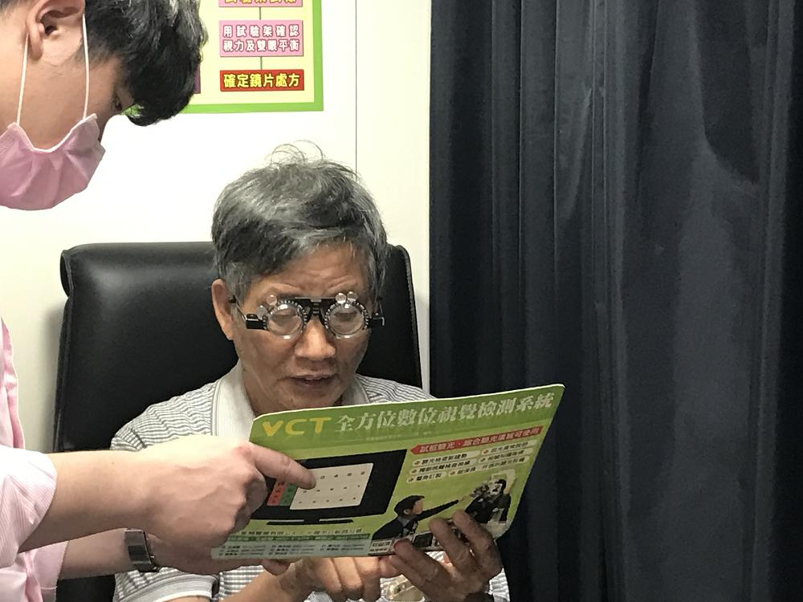
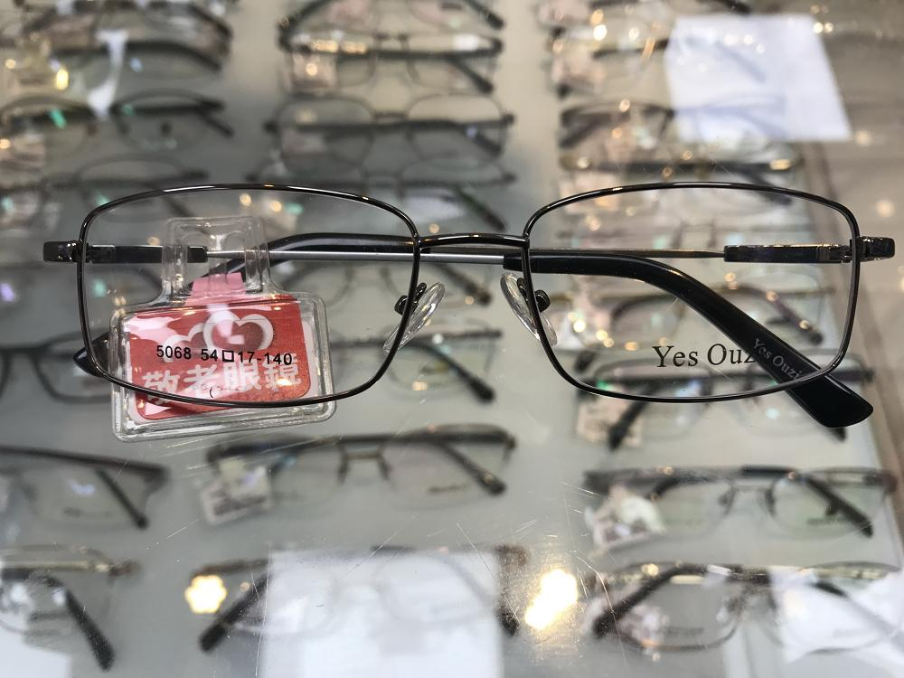
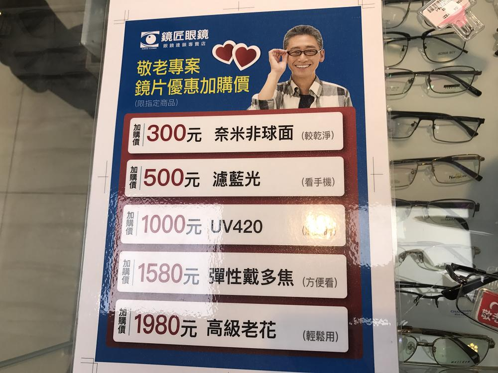
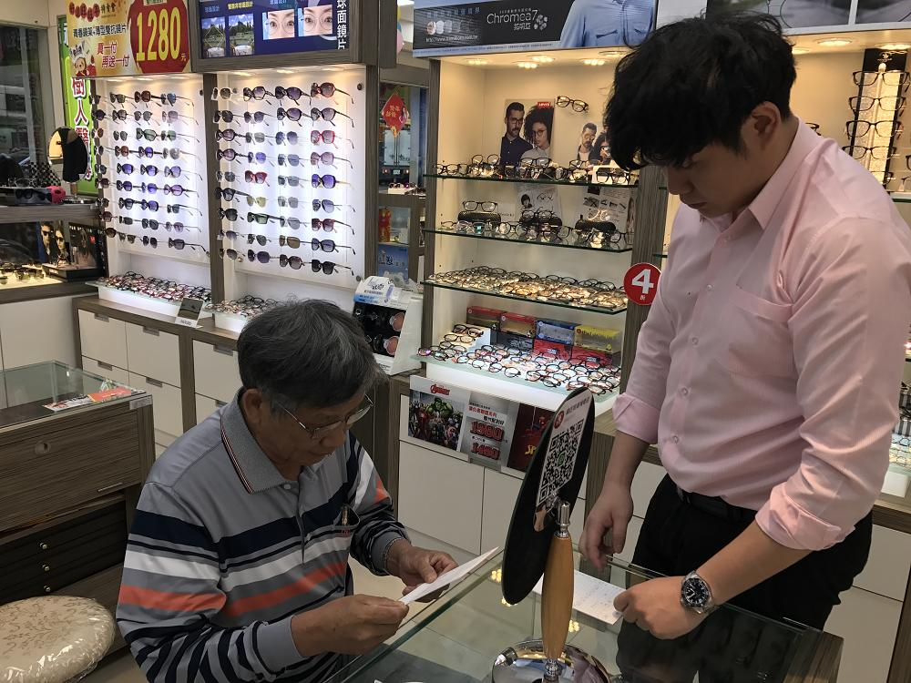
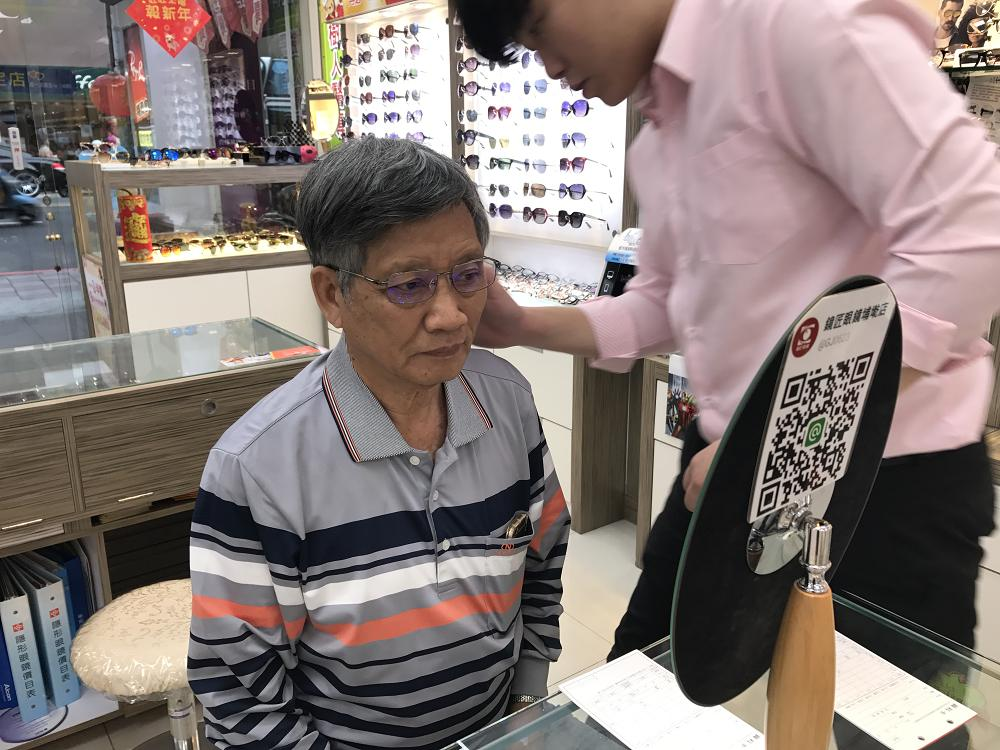
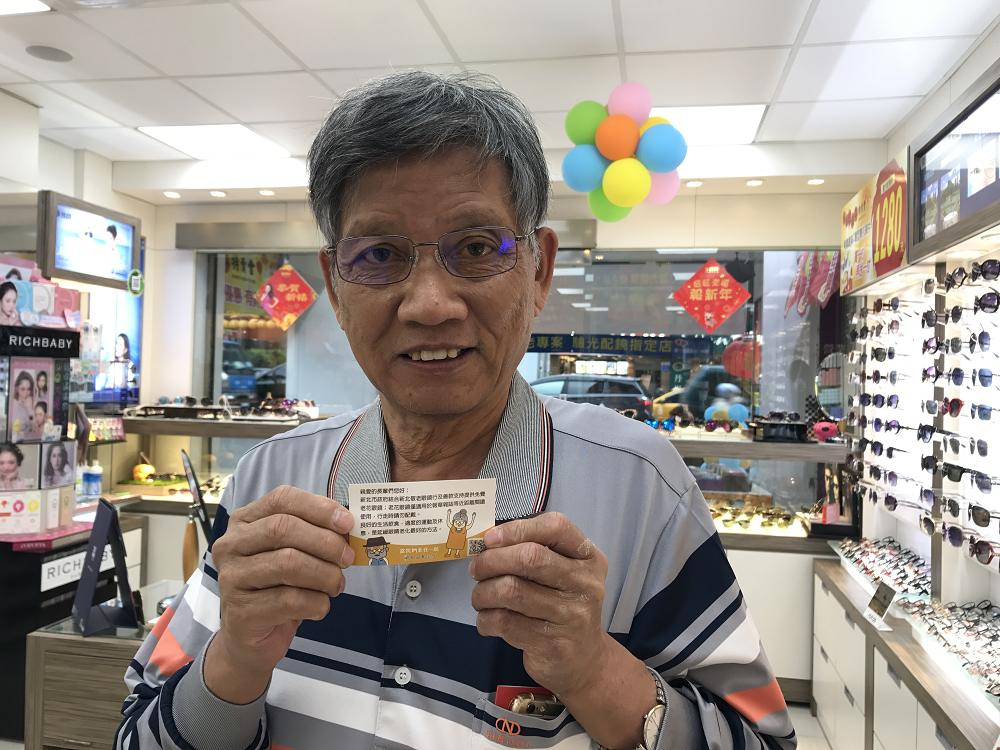

新北長者免費老花眼鏡 攝影阿伯來申請
日前在電視上有看到新北長者免費老花眼鏡這個新聞資訊，有時候心態上就是知道可以申請但是沒申請過，就會想太多，覺得麻煩等等，但這次申請的經驗發現還滿簡單的，一點都不困難，跟大家分享我的經驗。以下是我申請的方式。
1.找到可以申請的眼睛行，我是有先上網查詢附近可以申請的眼鏡行，但其實若是眼鏡行有搭配敬老方案的話通常門前也會貼有貼紙或是布條，很清楚的。
2.找到眼鏡行後詢問是否還有配額可以申請。若還有配額會請您提供身分證字號查詢是否可以申請，若可以申請就會接著做檢查的動作。


3.因為我過去都沒有戴老花眼鏡的習慣，服務人員會先協助做一個基礎的檢查，檢查您的度數，老花的情況，去判斷還需要的度數，會再調整一個度數給您試帶看看，確認是否看起來都清楚和符合狀況


4.若老花眼鏡度數都確認好了，接著會讓您選框，有搭配免費方案的鏡框，也可以再補差價捕其他鏡框，我們是選擇免費方案的鏡框，另外還提供其他的補差價升級方案，這可以按照個人需求決定，不升級方案也都可以喔。當下決定好後兩天後就可以再來拿老花眼鏡嚕


5. 服務人員很細心，協助帶好眼鏡號幫忙調整邊框，更接近自己的頭型，這樣戴起來也比較舒服點。



整體來說店家的服務很棒，也很親切，也不會因為是免費的老花眼鏡就比較不確實，而是非常的細心說明每一個步驟，我已經申請好了，快去申請喔!
我們申請的是老花眼鏡喔，老花眼鏡僅適用於近距離閱讀或使用手機使用，行走時請不要配戴。這個很重要要注意喔!
補充說明
申請資格:凡設籍新北的65歲以上市民(42年以前(含)出生)、且去年(106年)未領取免費老花眼鏡之民眾，即符合配鏡資格，符合資格之長者，請攜帶身分證、健保卡或敬老悠遊卡正本至「新北敬老眼鏡行」辦理配鏡服務。
申請時間：107年3月6日起皆可辦理。
資料查詢： 107年新北敬老眼鏡行-長者免費老花眼鏡
資料查詢：查詢個人是否符合資格
資料查詢：查詢新北敬老眼鏡行

攝影阿伯
我是攝影阿伯，是一個熱愛出遊與攝影的阿伯，老了! 就時間變多了! 但總是不知道要做什麼的時候 !跟著攝影阿伯使用敬老卡一起散步暢遊台北!